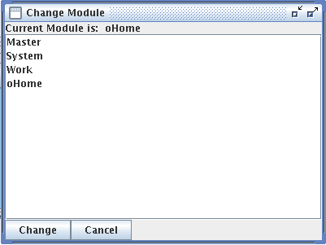
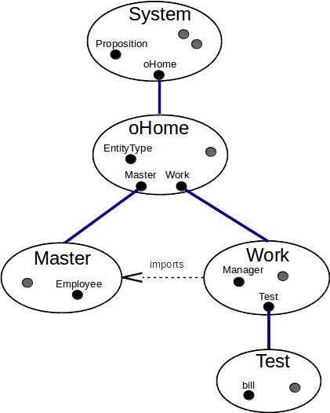

Modules divide a ConceptBase database into a hierarchy of namespaces that determine which objects are visible inside the scope of a given module. Hence, each module forms a database that is part of the whole database. The scope of visibility also applies to deductive rules, integrity constraints, queries, active rules, and functions. They are also objects of the database and thus subject to the visibility rules. Any object in the database belongs to exactly one module, but it can also be visible to other modules, in particular to the sub-modules. Hence, whenever an object is created, updated or deleted (TELL, UNTELL), then this has to be done in the context of the module that defines the object. You can only query (ASK) an object, if the object is visible in your current module context. Analogously, an object x can only reference other objects that are visible in the module context where x is defined.
Modules that are not visible to each other also do not interfer with each other. Hence, two users can use the same ConceptBase database and any change (TELL, UNTELL) done in the one module context does not influence the way how the other module reacts to requests. Modules are organized in a hierarchy. Changes to a supermodule shall impact all its sub-modules. This applies in particular to the integrity of the sub-modules. For example, if an object in a sub-module refers to an object in a super-module, then an update to the object in the super-module could render the sub-module inconsistent. This would lead to a rejection of the update. Analogously, the result of queries in a sub-module also depends on the objects in the super-modules. A module in ConceptBase is quite similar to a DATABASE in SQL in terms of isolating work spaces. On the other hand, the sub-module construct allows for controlled sharing of objects.
One useful application of modules in ConceptBase are modelling situations where different objects are labeled with identical names. In earlier versions of ConceptBase this was prohibited by the Naming Axiom which demands that different objects have different names. Now objects with identical names can be stored in different modules without interferences. Another application is to store alternative conceptual models of the same domain in different modules. The alternative versions can also share a common core, e.g. by storing it in a super-module of the version modules.
Another application of modules is to separate a metamodel (defining some constructs) from the models represented in terms of the metamodel. The metamodel shall be defined in a super-module and the models would be stored in sub-modules of this super-module. By this organization, the models do not interfer with each other unless they are explicitely linked via export/import clauses. In multi-perspective modeling, models need to be rather tightly linked to each other. Then, one should better store all such models in a single module.
The set of visible objects in a module context is not limited to the set of objects defined for the module. The ConceptBase module concept permits to reuse existing objects from different modules via import and export interfaces. Furthermore, modules can be nested. A nested module object (also called sub-module) is defined in the context of another module, called its super modude. A nested module object is only visible within the context of its super module. Objects that are visible in the super module are visible (and can be reused) to all its sub-modules.
ConceptBase users can be assigned to individual home modules, i.e. the module they start working with when registering with the ConceptBase server. So-called auto home modules force every user in her own module to further reduce potential unwanted interferences. A flexible access control mechanism allows to define access rights of users simply by query classes defined either globally or locally to a module.
The class Module defines an attribute contains and thus is the construct to create new modules. Each module is created by creating an instance of the class Module.
Module in Class with
attribute
contains: Proposition
end
Thus, a module is a container of objects. Modules create a name space: object names must be unique within one module, but different modules can contain different objects with identical names.
Tell, Untell and Ask operations work relatively to a specified module. The normal way of specifying the context in which a transaction takes place is using the Set Module function of CBIva. See subsection 5.2 to learn how to change the module context of a transaction. The command line interface CBShell has similar operations to switch the module context.
The basic set of predefined objects of ConceptBase (such as Class, Proposition, QueryClass, etc.) belongs to the predefined module System. The default module of clients logging into a CBserver is oHome, a direct submodule of System. You can set the module context to your other modules in order to manipulate them.
The contains attribute of the Module object is a derived attribute and is a link to all objects defined inside the context of a certain module. This attribute is not stored explicitly but can be used anywhere in the O-Telos assertion language.
Now we show how to create modules. We introduce a small running example in order to demonstrate all module-related facilities of ConceptBase.
Let’s assume you’ve started ConceptBase with a fresh database. After telling the following two frames, the server contains two new modules, which are nested inside the pre-defined oHome module:
Master in Module end Work in Module end
The super-module oHome includes the two objects Master and Work but not the objects contained in them (compare also Figure 5.2). We call oHome the super-module of the sub-modules Master and Work. One you switch to a sub-module, say Master, then all sub-sequent operations apply to this module context. Telling new objects makes them members of this module context, in other words Master contains them.
The standard way for changing the module context is to choose the select module menu entry from the Options menu in the user interface. A dialog with a listbox containing all known modules in the current context are shown. Double-clicking a module entry in the listbox sets the current module context to the selected module and lists all modules that are visible in this module (i.e., its submodules and supermodules.

Figure 5.1: The module context selection window
In our example, you should get a window displaying the modules Master, System, Work, and oHome in alphabetic order (see Figure 5.1). Now double-click the entry Work. As a result the module context of the CBserver is set to the module Work. As the Work module has got no nested modules, there are no additional modules displayed in the listbox (i.e., all modules that are visible in the oHome module are also visible in the Work module. Alternatively, you can specify the module context using the load model operation and placing a
{$set module=MODNAME}
inline command placed before the first Telos frame of a source model file. MODNAME stands for the name of the module in which you wish to define the content of the source model file. Module paths like System/oHome/Work are allowed as well. Please note that only one inline-command is allowed within one source model file. Specifying module contexts using inline commands is a facility for automatically loading Telos frames of large applications which are spread over different modules – without requiring the user to employ the select module function from CBIva.
In CBShell, you can use the command cd (alias: setModule) to switch the module context. Let’s set the module context first to oHome and then TELL the following frames for a very simple ER notation (using CBShell syntax, see section 7):
cd oHome
tell "EntityType end
RelationshipType with
attribute
role: EntityType
end"
Then set the module context first to Master and then TELL the Employee frame:
cd Master
tell "Employee in EntityType,Class with
attribute
name : String
constraint
nec: $ forall e/Employee exists n/String (e name n) $
end"
The object Employee is now only visible in the module Master. When you set the module context to Work (or System) and try to load the Employee object, you should get an error message from the server stating that the object Employee is not visible in that module context. The object Employee correctly references EntityType, since it is visible via the super-module oHome.
A nested module object is a module defined in the context of a super module and therefore is contained in the super module. The objects contained in the nested module are not contained in the super module.
After the definition of the Master and Work modules as nested modules to the oHome module, let’s define a nested module to the Work module. We assume that the current module context is set to the Work module. Now tell the following module object:
cd Work tell "Test in Module end"
As a result we have defined the nesting hierarchy depicted in Figure 5.2.

Figure 5.2: Nested module hierarchy
A nested module can see the content of all modules on the path to the root module System. Therefore, when you set the module context to Test, you can reference all objects contained in the modules Test, Work, oHome, and System. When you set the module context to Work, you can reference all objects contained in Work, oHome, and System.
Any ConceptBase database has the pre-defined modules System and oHome. The System module contains the pre-defined objects of ConceptBase, i.e. the O-Telos classes Proposition, Individual, Attribute, InstanceOf, and IsA, but also a large number of other pre-defined objects that are required for a functioning system, e.g. Integer, Class, QueryClass, and many more. The oHome module is initially empty. It is the default home module for users and clients that add/update/delete and query objects. A user could delete objects in the System module, which could then disable core functions of ConceptBase. One can however also prevent such updates by limiting the access to the System module.
In order to use objects which are not visible in a module, ConceptBase offers the export/import facility. The class Module defines two further attributes, namely to specify objects exported from a module and to modules imported by a module.
Module with
attribute
contains : Proposition;
exports : Proposition;
imports : Module
end
In order to allow other modules to import objects from a module, we need to define an export attribute from the module object to those objects. We call the set of objects exported by a module the export interface of a module. In order to include the export interface of another module to a module, we need to define an imports-attribute from the module object to the module to be imported.
In our running example we would like to define a specialization of the Class Employee within the Work module. It is desirable to reuse Employee from the Master module instead of redefining it in the Work module.
In order to import the class Employee to the Work module, we have to define all objects belonging to the Employee class as exported objects. First change the module context to Master. Now TELL the following frame within module Master:
Master with
exports
e1 : Employee;
e2 : Employee!name
end
Now you have defined the objects Employee and Employee!name as exported objects of the Master module. Any module in your database, which defines an imports-attribute to the Master module, can now reference these objects. Now change the module context to Work and TELL the following frame within module Work (see also Figure 5.2):
Work with
imports
i1 : Master
end
The objects mentioned above are visible in the context of the Work module. Check this by loading the Employee object with the Edit/Load Object function of CBIva. The import declaration for Work is done within the module context Work. The attribute Work!imports is thus part of the Work module while the Work object is contained in the oHome module. The object Master is visible in the Work module as well. The visibility rules restrict the possible import declarations. You can now define the specialization Manager of Employee in the context of the Work module:
Manager isA Employee end
When untelling exports declarations from a module, ConceptBase checks for integrity violation in all concerned modules. Try untelling the exports attributes from the Master module and you should get an error message saying that referential integrity is violated in the Work module. The reason for this violation is simple: since the class Employee is no longer exported from Master, it is no longer visible inside the Work module and therefore the referential integrity (a builtin O-Telos axiom) is violated for the Manager specialization of Employee.
If you define integrity constraints in the exporting module Master, then these constraints are not checked for objects in the importing module Work. For example, the constraint nec of Employee is only visible in Master and its sub-modules, not in Work and its sub-modules. Hence, you can still declare an object like bill in module Test that does not need to fulfill the constraint for Employee:
cd Test tell "bill in Employee end"
The module hierarchy in Figure 5.2 assigns objects belonging to different abstraction levels (meta classes, classes, objects, ...) to different modules. This assignment is not prescribed, but it is recommended. For example, the module oHome stores meta classes such as EntityType. This metaclass is then used in the sub-module Work to define a class like Manager. Finally, the module Test instantiates the class Manager by bill. There is a natural reason for such a structure. The persons defining meta classes are engineering modeling languages. The persons defining classes are conceptual modelers or application programmers, and the persons defining objects at the lowest abstraction level are application users. These activities depend on each other but one should separate the workspaces to shield an update to the modeling language from an update to a conceptual model. Another reason is that a modeling language can be used for many conceptual models. Each conceptual model needs the definitions of the modeling language but they typically should be separated from each other. Hence, each conceptual model can be stored in its own module, being a sub-module of the module defining the modeling language.
The following CBShell script shows how a module hierarchy is created. The command "cd" is use to switch to a module, the command "mkdir" creates a new submodule in the current module. The module oHome contains the submodule ERnotation for the definition of the ER modeling language. The two submodule UModel and LibModel. The submodule UData of UModel stores a sample database for the university model.
cd oHome mkdir ERnotation cd ERnotation tellModel ERD-Language.sml.txt mkdir UModel mkdir LibModel cd ERnotation/UModel tellModel UniversityModel.sml.txt mkdir UData cd ERnotation/UModel/UData tellModel UniversityData.sml.txt
When ConceptBase is used in a multi-user setting, it makes sense to automatically assign clients of ConceptBase users to a dedicated module context, their so-called home module. To use this feature, the database of the ConceptBase server has to contain instances of the pre-defined class CB_User. This class is defined as follows:
CB_User with
attribute
homeModule : Module
end
Assume that we have two users mary and john who need to be assigned to different modules when they log into the CBserver by their favorite user interface. The system adminstrator should then include the following definitions to the database of the CBserver:
Project1 in Module end Project2 in Module end mary in CB_User with homeModule m1 : Project1 end john in CB_User with homeModule m1 : Project2 end
As a consequence, the start module of the two users will be set accordingly when they log into the CBserver. The home module feature is especially useful in a teaching environment. The teacher can put some Telos models into the shared oHome module. Students’ home modules would be assigned to sub-modules, e.g. based on group membership. Each student group can then work on an assignment by working on their sub-module without interfering with other student groups.
There is a subclass AutoHomeModule of Module, which supports applications of ConceptBase where by default any user should work in her own module context. Rather than having to define separate modules for each user explicitely, you can just define a certain module to be an instance of AutoHomeModule.
LectureModule in AutoHomeModule with exception e1: mary end mary in CB_User with homeModule m1 : LectureModule end john in CB_User with homeModule m1: LectureModule end
You can also define a rule to assign all or a subset of users to this module:
CB_User in Class with
rule
homeRule : $ forall u/CB_User (u homeModule LectureModule) $
end
Here, user john (a student) will be automatically be assigned to a new module M_john that is created as sub module of LectureModule. User mary, presumably a teacher, is defined to be an exception to this rule and she will get the home module LectureModule. By this, one can reduce the chances of unwanted interferences between users of the module LectureModule. Still, all users can read the definitions in the module LectureModule and its submodules unless access restrictions are defined (see section 5.7).
The simplest way to separate the workspaces of any user is to tell
oHome in AutoHomeModule end
In this case, no user needs to be defined explicitely1 as instance of CB_User and still will get assigned her own sub module to work in. The auto-home module becomes active as soon as the module is declared as instance of AutoHomeModule. If you want to enable oHome as auto-home module from the very beginning when a database is created, then you can activate it by a parameter of the CBserver, e.g.
cbserver -g public -new MYNEWDB
This will instruct the CBserver to tell "oHome in AutoHomeModule end" when it sets up the new database. See also section 6.6.
The home module definitions need to be made within module oHome because they will be evaluated upon client registration (server method ENROLL_ME) in this module context. Please note that the module context is only dependent on the user name, not on the client and not on the network location of the user. It could well be that a user mary is defined on multiple computers on the network and that different natural persons are identified by mary. ConceptBase currently cannot detect such cases.
When multiple users work on the same server, their workspaces not only need to be separated in a controlled way by means of the module feature. Users are also interested in controlling who has which rights on their workspace (=module). ConceptBase includes basic support for rights definition and enforcement via a user-definable query class CB_Permitted. The signature of this query class has to conform the following format:
CB_Permitted in GenericQueryClass isA CB_User with
parameter
user: CB_User;
res: Resource;
op: CB_Operation
...
end
A user is allowed to perform the operation op on the resource res iff the constraint of the query is satisfied. Then, user is returned as answer of the query. If not, the answer is nil (equals empty set). Some fundamental definitions are pre-defined objects of ConceptBase:
Resource with end Module isA Resource end CB_Operation end CB_ReadOperation isA CB_Operation end CB_WriteOperation isA CB_Operation end TELL in CB_WriteOperation end ASK in CB_ReadOperation end
Hence, at least two operations TELL and ASK are pre-defined symbolizing write and read accesses to a resource. Modules are the prime examples of resources to be access-protected. Currently, only access to them is monitored by the CBserver.
When a user wants to switch to a new module, then he must at least have the permission to execute the operation ASK on it, i.e. read permission. Otherwise, the module switch is rejected. This check is the main protection scheme offered to module owners. Define the query class CB_Permitted in the module that needs protection.
Assume that there is a user jonny who wants to protect his module Mjonny. To do so, he would first define the module and set the module context to Mjonny.
Mjonny in Module end
Then, he would set the module context to Mjonny define his rights management policy, for example:
CB_Group with
attribute
groupMember: CB_User;
permitted_read: Resource;
permitted_write: Resource;
owner_resource: Resource
end
CB_User isA CB_Group end
CB_Group in Class with
rule
rr1: $ forall p/Resource u/CB_User
(u owner_resource p) ==> (u permitted_write p) $;
rr2: $ forall p/Resource u/CB_User
(u permitted_write p) ==> (u permitted_read p) $;
rr3: $ forall u/CB_User (u groupMember u) $;
rr4: $ forall u/CB_User p/Resource
( exists g/CB_Group (g groupMember u) and
(g owner_resource p) ) ==> (u owner_resource p) $;
rr5: $ forall u/CB_User p/Resource
( exists g/CB_Group (g groupMember u) and
(g permitted_write p) ) ==> (u permitted_write p) $;
rr6: $ forall u/CB_User p/Resource
( exists g/CB_Group (g groupMember u) and
(g permitted_read p) ) ==> (u permitted_read p) $
end
CB_Permitted in GenericQueryClass isA CB_User with
parameter
user: CB_User;
res: Resource;
op: CB_Operation
constraint
cperm: $ (
( not exists u/CB_User
(u owner_resource ~res) and
not (u == ~user) )
or
( (~op in CB_ReadOperation) and
(~user permitted_read ~res) )
or
( (~op in CB_WriteOperation) and
(~user permitted_write ~res) )
)
and UNIFIES(~user,~this) $
end
In the above example, access rights are granted to groups of ConceptBase users. The owner of a resource will always have full access via rules rr1 and rr2.
Then, the user would claim ownership to the module via
jonny in CB_User with owner_resource r1: Mjonny end
Then, only jonny can switch to the module Mjonny. If a second user like mary was to be granted read permission, jonny would define within module Mjonny:
mary in CB_User with permitted_read r1: Mjonny end
In the above example, rights can also be granted to groups of users and then inherited to its members via rules rr4 to rr6. It should be noted that the definitions of owner_resource, permitted_read and permitted_write are just for illustrating what is possible. ConceptBase only requires the query class CB_Permitted in the module where the access rights need to be enforced. If such a query class (or a local version as explained below) is not defined, then any access is permitted for any user.
When a user attempts to switch to new module context, ConceptBase checks whether the user has at least read permission, i.e. permission for executing the operation ASK, on the module. If permission is not granted, the user cannot switch the module context and an error message is presented.
The definition of the query CB_Permitted is visible in the module where it is defined and in all sub-modules of this module. One can also define a local version of the query by appending the module name to its name, e.g. CB_PermittedMjonny. This version is only tested for access to the module Mjonny. The local overrides the general version CB_Permitted and its function is not inherited to sub-modules. The subsequent definition prevents updates to the Test module, if it is visible in the Test module and access control is enabled by the CBserver:
GenericQueryClass CB_PermittedTest isA CB_User with
parameter
user: CB_User;
res: Resource;
op: CB_Operation
constraint
cperm: $ (~op in CB_ReadOperation) and UNIFIES(~user,~this) $
end
There are plenty of ways to combine general and local versions of CB_Permitted yielding different access policies. When using access control, at least the module System should be protected. Otherwise, users could change essential definitions affecting all other users. Examples for access control policies are in the HOW-TO section of the ConceptBase Forum (link).
It is very well possible to make access to a ConceptBase database completely impossible by errors in the definition of CB_Permitted. For example, one could deny access to any operation by the following simple rule:
CB_Permitted in GenericQueryClass isA CB_User with
parameter
user: CB_User;
res: Resource;
op: CB_Operation
constraint
cperm: $ FALSE $
end
In such cases, one has to start the CBserver with disabled access control and repair the definition of the query CB_Permitted. Access control is by default set to level 1, which just constrains the scope of an UNTELL to the local module. You need to set the CBserver option -s to 2 to fully enable access control (see option -s in section 6).
The access definition via the query CB_Permitted or its localized variant is available in the module oHome and its submodules. It is not available for checking permission to access the System module. The reason is that user details are stored in oHome and signature of CB_Permitted requires that the user details are known. The protection of the System module is instead configured via the security level of the CBserver (option -s):
Caution: The access control feature of ConceptBase avoids some unwanted interferences in a setting where multiple users work on the same server. The system in not save against malicious attacks! Neither does it prevent all unwanted interferences.
The contains attribute allows to check which objects belong to a module. It can be used by a simple query that lists the module content of all modules that are currently visible:
ShowModule in QueryClass isA Module with
computed_attribute
cont : Proposition
constraint
ccont : $ (~this contains ~cont) $
end
A more sophisticated method is to use the builtin query listModule. A call of listModule without parameters will list the current module as Telos frames. You can also provide the module to be listed as a parameter, e.g.
listModule[System]
will list the content of the module System. ConceptBase will check read permission before a module content is listed. You can also use a module path as parameter, e.g.
listModule[System-oHome-Work]
A module path is formed much like a directory path in a file system. The root module is System and modules names are separated by the character ’-’. You can also use ’/’ as module separator:
listModule[System/oHome/Work]
The implementation of the listModule query preserves the order in which objects have been created. Note that the System module is defining the essential objects that ConceptBase requires to run correctly. You can list the System module but you should not change it.
If the content of a module was created by separate transactions, then listModule shall indicate them by a separator line "{---}". This separator is disabled when you specify -mg whole as CBserver parameter (see section 6.1). The separator is technically a comment. However, CBGraph and CBIva shall use such separator line to split a sequence of frames into separate TELL transactions.
If a module path does not exist or the current user has no read permission on modules in the path, then the answer "{* no *}" is returned.
The query listModule extracts all objects of a module into a single Telos source. Since a module is typically created by a sequence of TELL/UNTELL transactions, this Telos source can in rare cases fail to be told by a single transaction. An example is the specification of the ERD model in link. The university model (and then university data) depend on rules defined in the model ERD-Semantics, specifically the semantics of the ISA type (instances of subclasses are also instances of superclasses). If you tell the university model and the ERD semantics in the same transaction, then the rules for the ISA type are not yet usable for checking the consistency of the university model. A way out is to store the university model as sub-module of the module that contains the ERD semantics, and university data as sub-module of the university module.
A way out of this dilemma is to use the module feature of ConceptBase in a thoughtful way. In this case, define a module like ERnotation to which the ERD notation is told. Within this module, define a submodule like UModel, to which the example ER model is told. Finally, define a submodule UData to hold the sample data. By nesting the submodules in this way, the sample data objects can "see" the definitions of the example ER model. And the example ER model can "see" the objects of the ER notation.
The builtin query purgeModule attempts to delete all propositions of the current module or the module that is specified as a parameter. The operation fails if the module contains a non-empty submodule. Further, the operation may non be applied to the System module.
The operation requires that the user has appropriate permissions on the module to be purged.
The query purgeModule is declared as a hidden object. Hence, it shall not show up in the ’Display queries’ dialogue of CBIva. The current implementation is experimental. An alternative is to list the contents of the current module and then applying the UNTELL operation to the whole content.
The ConceptBase server (see section 6) has two command line options -save and -load to synchronize with the content of database modules as Telos sources files in the file system of the CBserver. The purpose of this feature is to allow an easy way to save/reload the complete content of a database using a readable source format. These sources can be modified with a regular text editor.
The source files generated by the save function include a set module directive that instructs the CBserver to load the file to the original module path when the load function is invoked (or when the file is loaded manually via the load model function of CBIva (see section 8). There are two ways to represent saved/loaded module sources in the file system:
The save function is activated when the CBserver option -save savedir is specified. The source files are saved in the directory specified by the savedir parameter. This parameter must be the path to an existing directory. If activated, the save function is invoked upon the following events:
In all cases, the save function is executed with the rights of the user who started the CBserver. The save function requires at least read permission for the module to be saved. The above rules are also applicable to the server-side materialization of query results, see section 5.11.
The load function gets activated when the option -load loaddir is specified. The directory loaddir should contain files with file/directory names being formed as explained for the save function. It loads the files in alphabetic order to control the sequence in which the files are loaded. If you manually add Telos source files to a directory that is about to be loaded, then make sure that its file name is alphabetically sorted after the module file name, e.g. AB_01extension.sml is loaded after AB.sml. The import is executed once at CBserver startup with the rights of the user who started the CBserver. If a file contains an error, the loading of this module source fails. Error messages shall be displayed in the trace log of the CBserver. Note that the CBserver can be started with a non-empty database. The import of source files will be added to the already existing content of the database.
Examples:
cbserver -d DB1 -save /home/meee/DB1SRC
This command starts up a CBserver that will eventually save the module sources in the specified directory. Note that the saving takes place either at CBserver shutdown or when a client tool disconnects (partial save).
cbserver -u nonpersistent -save /home/meee/SRC
This variant will start a CBserver with a non-persistent database but the contents will nevertheless stored as Telos sources file in /home/meee/SRC.
cbserver -u nonpersistent -load SRC1 -save SRC2
This command starts a the CBserver (i.e. only system objects are defined) and then loads module sources from the directory SRC1. Then, client tools may modify the contents of the database. Finally, the module contents are saved in directory SRC2.
cbserver -d DB1 -load /home/meee/DB1SRC -save /home/meee/DB1SRC
The load and save directories may also be the same. Note that the save function will eventually overwrite the files that have been loaded at CBserver startup.
cbserver -u nonpersistent -load DB1SRC
This command will start a non-persistent CBserver and loads the module sources of directory DB1SRC.
Module sources do not contain the historic states of objects that are maintained with rollback times in the CBserver database. Hence, a persistent database is containing more information than the saved module tree and is also faster to start up compared to loading module sources. Still, the load/save function offers a simple way to keep a textual representation synchronized with the evolving database state, or to back-up/re-load a database state. The CBserver parameter -db combines the function of -d, -load, -save, and -views. Hence, all files will be accessed/updated in the database directory.
Similar to the saving of module sources, the CBserver parameter -views enables the materialization of certain query results in the file system of the CBserver. To do so, one has to specify the queries to be materialized. Only queries with a single parameter or with no parameter can be materialized. The queries need to be listed with the module that contains the objects that match the query. Example:
MyModule with
saveView
v1: Q1;
v2: Q2
end
You can also use deductive rules deriving the values for the saveView attribute.
The queries Q1 and Q2 need to be visible in the module MyModule. The queries need to have an answer format (section 3) defined for them (attribute forQuery). Assume that the query Q1 has the single parameter param:C1. ConceptBase will then call the query Q1[x/param] for each instance x of class C1.
The result is stored in a file with name x in the directory specified with the -views parameter. If the view is extracted from a module different to oHome, then the filename includes the module name as a prefix. The file type of the file is taken from the optional fileType attribute of the answer format of Q1. The default file type is ".txt". The result of queries with no parameter is stored in files carrying the name of the query. If the module separator is set to ’/’, then the files are stored in sub-directories that reflect the module path, from which the view was extracted, see also section 5.10.
The materialization of query results is executed at the same events when the saving of module sources takes place (section 5.10). To enable the materialization, you need to specify the target directory with the -views option:
cbserver -d MYDB -views /home/meee/MyViews
You can also use the CBShell utility (section 7) to extract the query results and materialize them on the client side. This method is more flexible but you need to program the CBShell scripts for to extract all required views. For example, the CBShell script
connect alpha 4001 ask Q1[x/param] OBJNAMES default Now showAnswer exit
connects to the CBserver running on a host named alpha with port number 4001 and will extract just the answer to Q1[x/param]. If there are more answers to be extracted, one has to employ separate scripts for each of them and execute them one after the other to save the results in separate files. The server-side method using the -views option will determine all possible fillers x for the parameter param and automatically save the results of Q1[x/param] in a separate file with filename x.
You can use the -db option for activating the saving/loading of module sources and the materialization of query results within the database directory:
cbserver -db MYDB
This creates a single directory with both the binary database files, the module sources, and the materialized query results. Further examples are available from the CB-Forum at link.
ConceptBase can only export textual query results. Some output formats such as program source code can be further processed by calling appropriate tools. This can be initiated manually, or one can configure the directory specified in the -views option with a command file postExport.sh. This command file shall then be executed by the CBserver whenever a saving operation on the views directory has taken place.
You have to regard that the command is executed in the context of the CBserver. Hence, it is executed in the directory in which the CBserver was started. You should therefore change to the views directory inside the post-export command file like shown in this example of postExport.sh:
#!/bin/sh cd `dirname $0` cp *.xml /home/meee/public
The second line changes to the views directory. The third line does the specific processing of the materialized query results. Here, we just copy the file. More interesting are calls to transformation routines.
You should remove the write permission for the post-export command to prevent that it can be overwritten2 by the materialization function. Under Unix/Linux, this can be achieved via the command
chmod u-w postExport.sh
The above command only has to be executed once within the views directory. If you use the module separator ’/’ (i.e. the deep structure explained in section 5.10), then the view files are stored in the directory of the module they belong to. This also may effect the way how you program the postExport script file. In Unix/Linux, you can use the ’find’ command to fetch all files that are subject for post-processing:
#!/bin/sh
cd `dirname $0`
xmlfiles=`find . -name "*.xml"`
for file in $xmlfiles; do
cp $file /home/meee/public
done
This script also works fine in the case of a flat view directory structure.